A contractor marketplace where both sides have to trust you
Connex is a two-sided marketplace connecting clients who need skilled tradespeople with contractors who offer those services — plumbers, electricians, cleaners, tutors, carpenters. Unlike traditional job boards, Connex removes the need for contractors to register a company. Payments, tax deductions, and invoicing are all handled in-platform, significantly lowering the barrier to self-employment.
"Create an onboarding experience so clear and frictionless that both a first-time client and a first-time contractor can complete setup without a tutorial — and feel confident before they reach the dashboard."
Onboarding a two-sided marketplace is twice as hard
Most marketplace onboarding fails for one of two reasons: it treats both user types identically when their needs are radically different, or it front-loads so much friction that users abandon before their first moment of value.
Connex's challenge was compounded by trust. Clients are handing money to strangers for work in their homes — they need significant trust signals before committing. Contractors are sharing bank details, government ID, and tax information with a platform they've never used. Both groups have strong reasons to abandon if anything feels unclear.
What competitive analysis revealed
I reviewed onboarding patterns from four established marketplace and service platforms — Bark.com, TaskRabbit, Fiverr, and Checkatrade — focusing on four dimensions that most directly affect trust and completion: whether the role split is surfaced upfront, whether progress is shown, whether sensitive data requests are explained, and whether the end of onboarding delivers immediate value. These are observations from a design audit, not claims about internal metrics.
Key insight
The most consistent gap was immediate value at the end of onboarding — most platforms deliver an empty state. The design direction for Connex was to surface live matched content on the success screen, making the platform's value tangible before the first session ends.
Two journeys, one design system
Both flows share the same visual language — dark navy sidebar, green progress bar, white form card — but are structured differently to match each user's actual needs.
Client journey — 4 steps
Client journey · % = sidebar progress
Contractor journey — 6 steps
Contractor journey · % = sidebar progress
11 screens, one coherent journey
Every screen has a single job. The sequence below follows the exact order a user experiences — starting from the public landing page, splitting into client and contractor paths, and ending with an activation moment that proves the platform works before the first session ends.
Screen 01 — Landing page
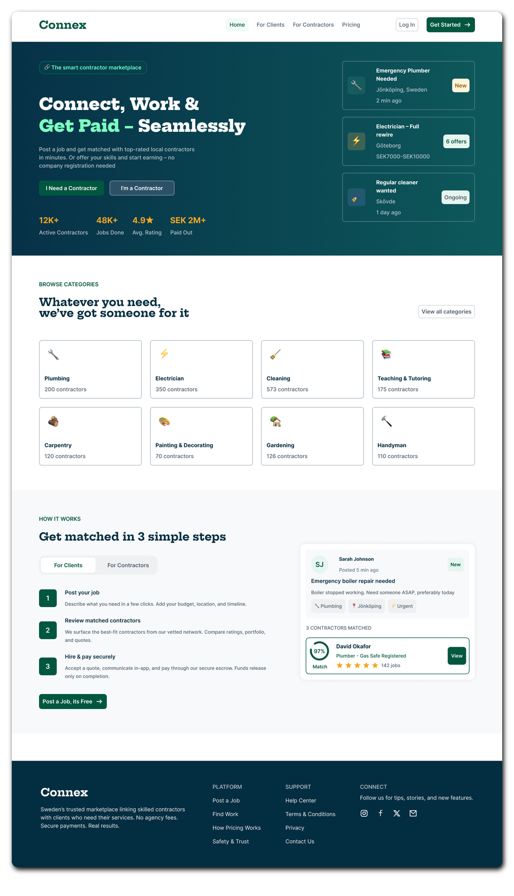
The hero resolves the first question any visitor has: is this for me? Two equal-weight CTAs — "I Need a Contractor" and "I'm a Contractor" — sit side by side from the first frame. Neither path is dominant. Live job cards on the right (Emergency Plumber, Electrician, Regular Cleaner) create social proof and signal the platform is already active. The stats row — 12K+ contractors, 48K+ jobs done, 4.9 rating, SEK 2M+ paid out — addresses trust before the user has even scrolled. The "How it Works" section uses a tab pattern, letting both audiences navigate explanations without fragmenting into separate pages. The category grid makes the scope of the marketplace immediately scannable.
Screen 02 — Get started
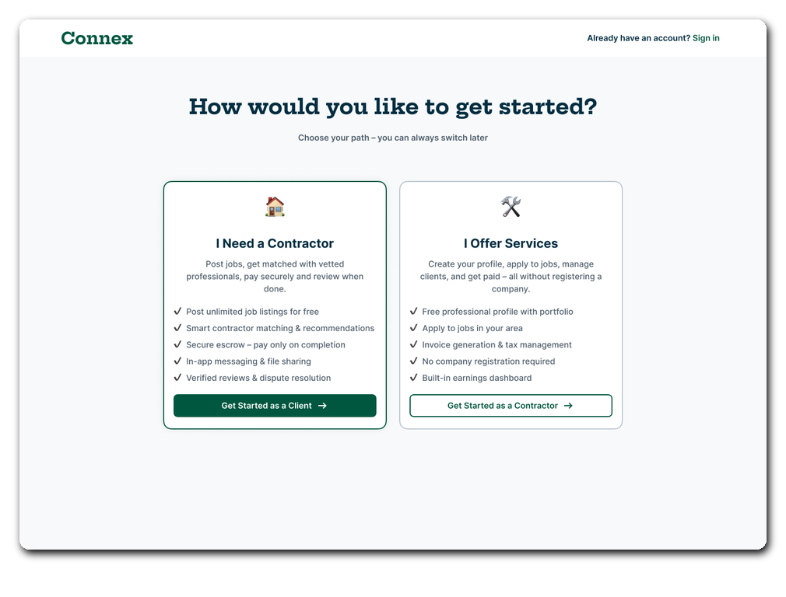
Role selection gets its own full-page screen rather than being buried as a dropdown mid-form. Both cards carry identical visual weight — same height, same border, no default selection. Each card carries five specific feature bullets so the user understands exactly what they are signing up for before clicking. The client card leads with "Post unlimited job listings for free" — removing a common objection before the sign-up form appears. The contractor card leads with "Free professional profile with portfolio" and explicitly states "No company registration required" — the single most important anxiety for sole traders. This screen commits the user to the right flow before any friction begins.
Screen 03 — Personal details (client)
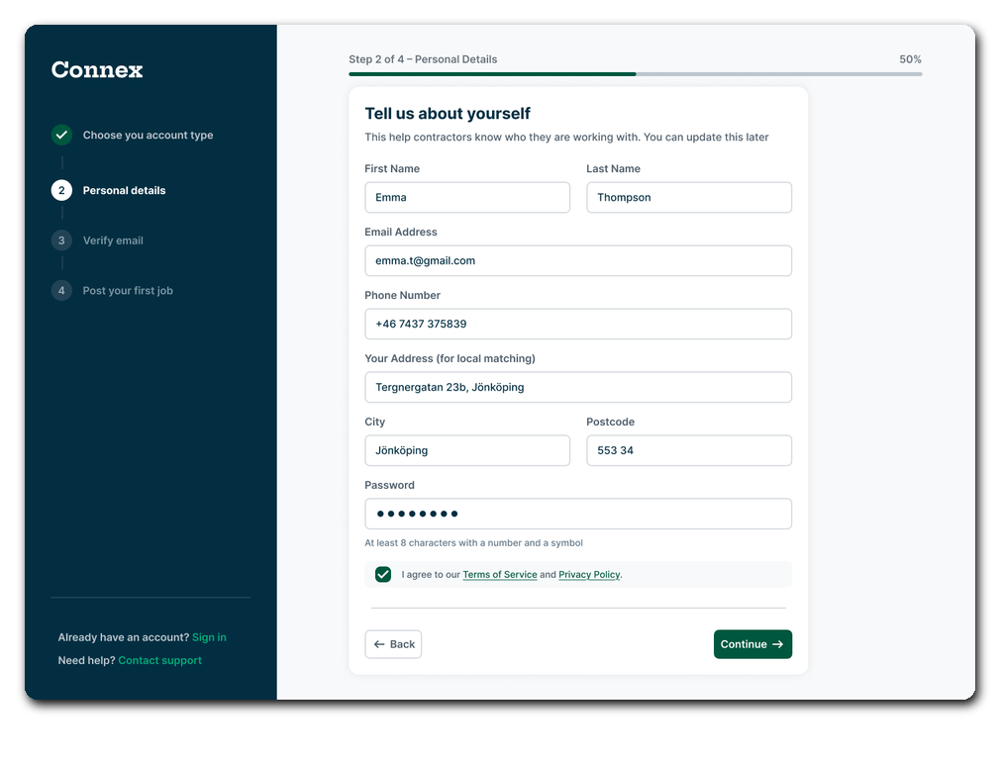
The sidebar pattern appears for the first time here and stays consistent across all remaining onboarding screens. The dark navy sidebar always shows the full journey — completed steps with a green checkmark, the current step in bold, and upcoming steps in muted grey. Users who cannot see the end of a process abandon it at higher rates. The four-step client journey (Choose account type → Personal details → Verify email → Post first job) is short enough to commit to on first sight. The address field is labelled "Your Address (for local matching)" — a three-word rationale that removes uncertainty about why the data is needed. The progress bar reads 50% at step two, which is accurate and honest.
Screen 04 — Verify email
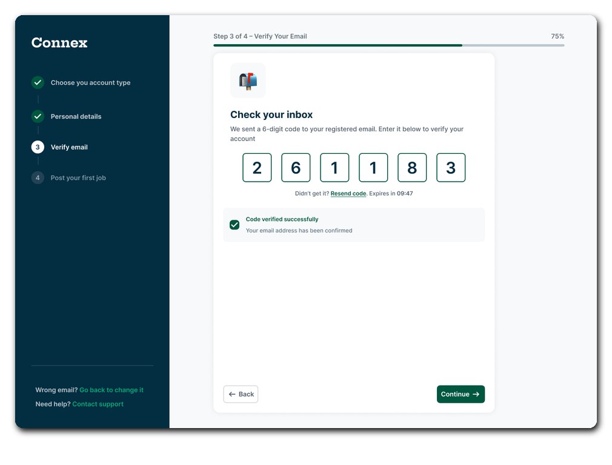
The six-digit code uses individual digit boxes rather than a single text field. This pattern reduces input errors and makes the expected format immediately obvious. The screen shows the expiry timer (Expires in 09:47) and a Resend code link simultaneously — handling both the patient user and the one who missed the email without requiring a separate error screen. The success state — "Code verified successfully · Your email address has been confirmed" — appears inline on the same screen rather than navigating away. The user sees confirmation in context before the automatic transition to step 4.
Screen 05 — Post first job
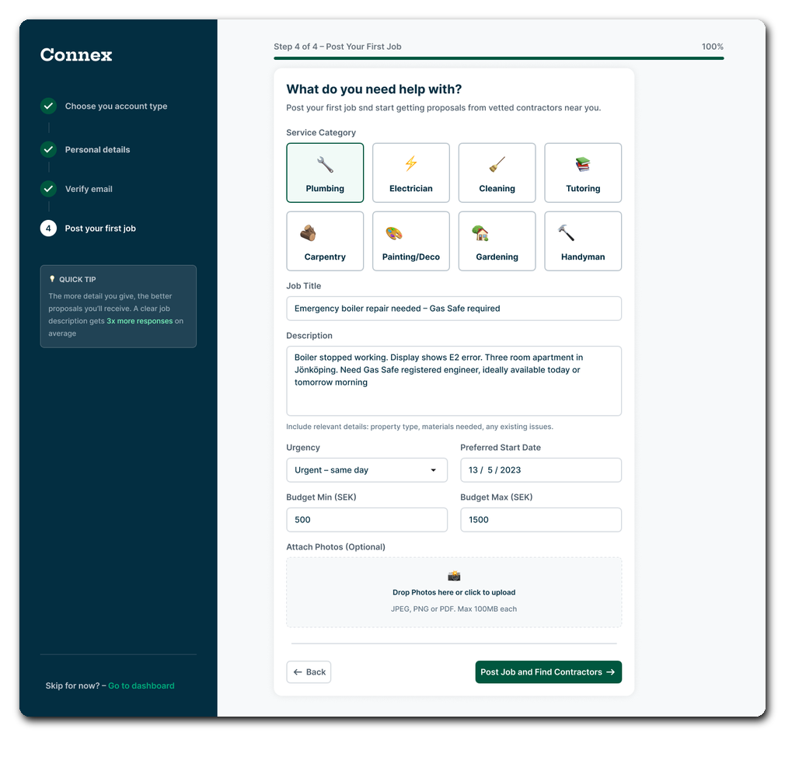
Posting a job is the final step of client onboarding rather than a redirect to an empty dashboard. This captures intent at its highest point — the user has just committed to the platform and is most motivated to act. The category grid (Plumbing, Electrician, Cleaning, Tutoring, Carpentry, Painting/Deco, Gardening, Handyman) uses a visual tile pattern rather than a dropdown, making the most common selections reachable in one tap. The sidebar callout "The more detail you give, the better proposals you'll receive — a clear job description gets 3x more responses" is positioned precisely here because it motivates richer input at the moment the user is writing. The urgency dropdown (Urgent – same day), budget range fields, and optional photo upload complete a form that is genuinely useful without being exhausting.
Screen 06 — Client success
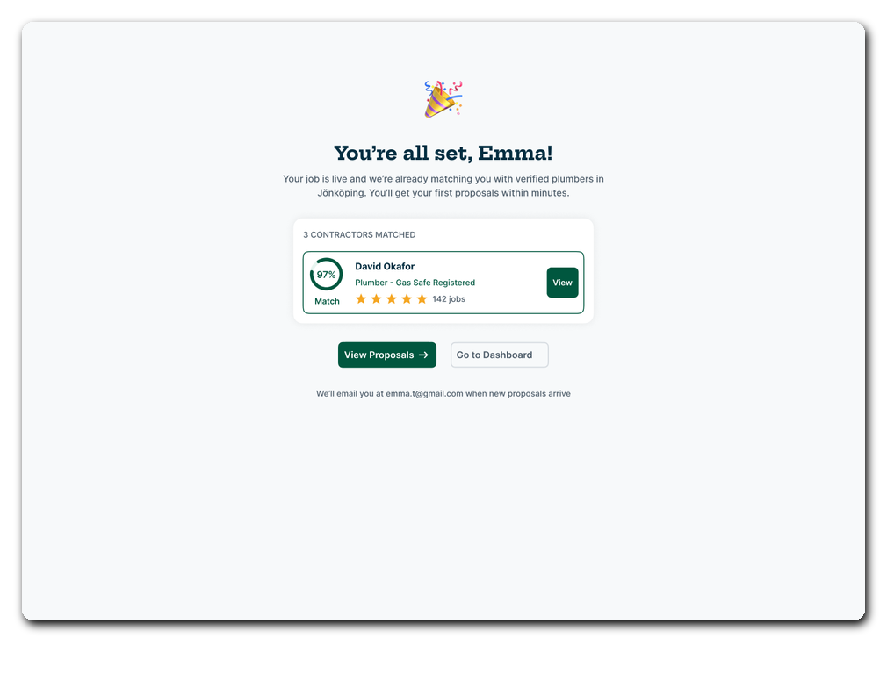
The client success screen does not say "you're done" — it says "You're all set, Emma!" and immediately shows a live matched contractor. David Okafor, Plumber – Gas Safe Registered, 97% match, 4.5 stars, 142 jobs. This is not placeholder content — it is the platform's matching algorithm running in real time. Three contractors are already matched; the top card is surfaced immediately. The two CTAs — "View Proposals" (primary, green) and "Go to Dashboard" (secondary, white) — give the user a meaningful choice. The footer note ("We'll email you at emma.t@gmail.com when new proposals arrive") sets the expectation for what happens next without requiring the user to return manually.
Screen 07 — Contractor skills & services
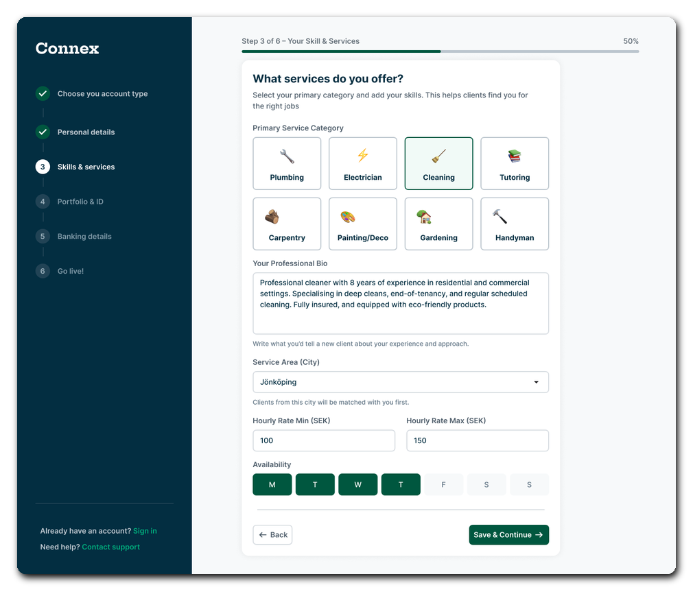
Step 3 of the contractor journey establishes the core of the contractor's profile. The category tiles match the client-side grid exactly — the same eight categories appear on both sides of the marketplace. The professional bio textarea carries the instruction "Write what you'd tell a new client about your experience and approach" — framing it as a conversation rather than a form field. The service area (Jönköping) explains immediately: "Clients from this city will be matched with you first." Hourly rate min and max fields allow contractors to set a range rather than a single price, which better reflects how tradespeople actually quote. The availability grid — M T W T F S S with toggleable day pills — gives clients meaningful scheduling information without requiring the contractor to commit to a rigid calendar.
Screen 08 — Portfolio & ID verification
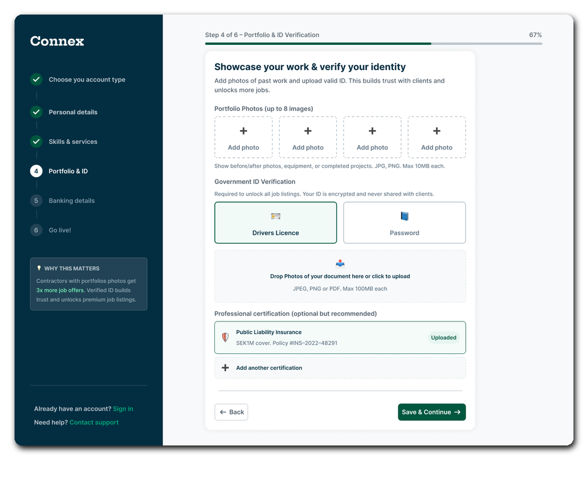
This screen asks for the most sensitive information in the contractor flow — government ID and portfolio photos — and justifies both before the upload UI appears. The sidebar callout "Contractors with portfolios photos get 3× more job offers" addresses the "is this worth my time?" objection directly. The portfolio grid supports up to 8 images with clear file guidance (JPG, PNG, max 10MB each). Government ID offers two paths — Drivers Licence or Passport — as equal-weight tiles, avoiding the assumption that all users hold one specific document type. The ID copy ("Your ID is encrypted and never shared with clients") appears immediately below the section heading, not in a footer or a tooltip. Professional certification is optional but recommended, with an already-uploaded insurance policy shown as a completed state to normalise the action.
Screen 09 — Banking details
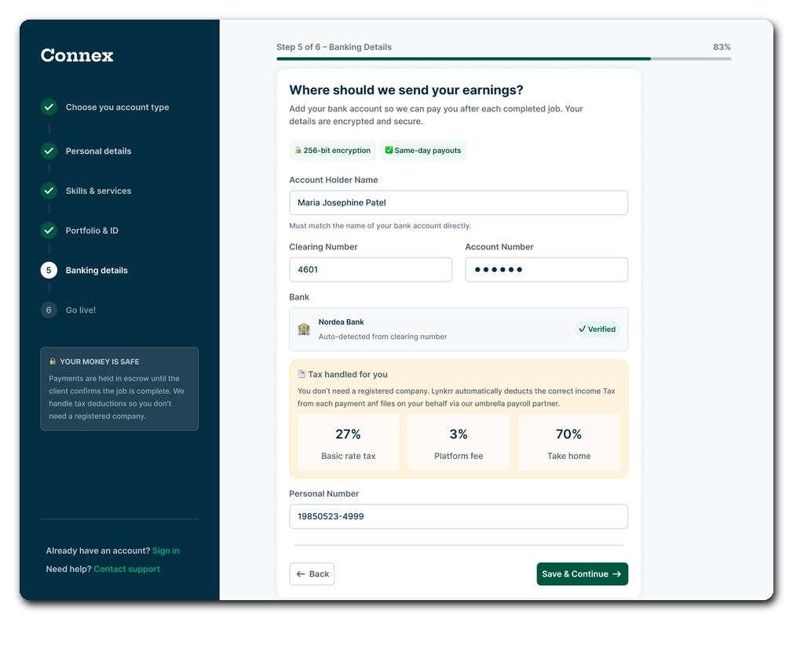
The amber tax panel is the most consequential UX decision in the contractor flow. It appears before any banking fields are completed and shows exactly where the money goes: 27% basic rate tax, 3% platform fee, 70% take-home. This converts an anxiety into informed consent. Contractors who do not understand how deductions work will not trust a platform with their bank details — this panel removes that objection entirely. The clearing number field auto-detects the bank name: entering 4601 surfaces Nordea Bank with a green "✓ Verified" badge, which removes uncertainty about whether the field is being used correctly. The escrow sidebar copy ("Payments are held in escrow until the client confirms the job is complete. We handle tax deductions so you don't need a registered company") reinforces the core contractor value proposition at the moment when trust matters most.
Screen 10 — Review & go live
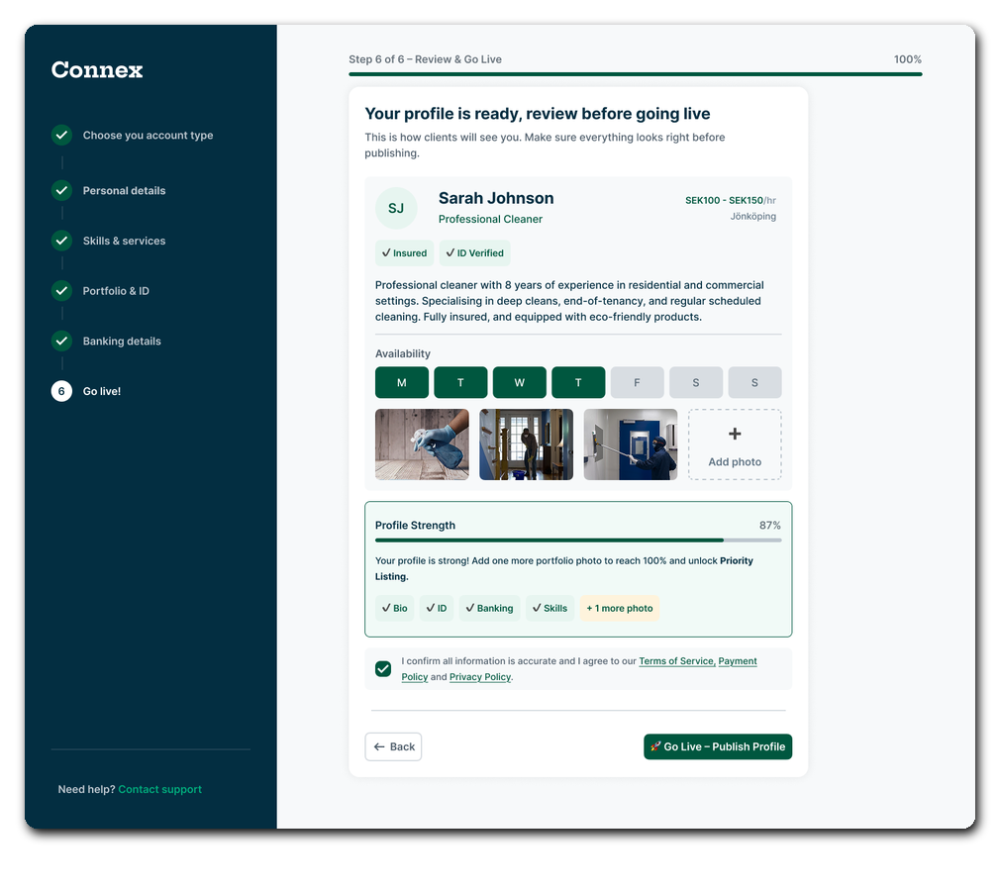
The final step is a full profile preview showing exactly what clients will see — not a summary of fields completed, but a rendered profile card with name, title, rate, location, availability, bio, and portfolio photos. The profile strength indicator (87%) is not a vanity metric — it identifies the specific remaining action ("Add one more portfolio photo to reach 100% and unlock Priority Listing") with the reward named explicitly. The completion checklist (✓ Bio, ✓ ID, ✓ Banking, ✓ Skills, + 1 more photo) shows what's done and what remains in one glance. The go live CTA — "🚀 Go Live – Publish Profile" — is direct and specific. The terms confirmation checkbox appears immediately above the CTA rather than at the start of onboarding, where it would feel premature.
Screen 11 — Contractor success
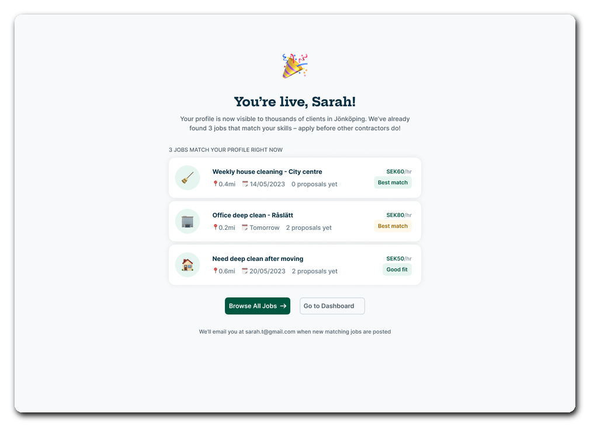
The contractor success screen mirrors the structure of the client success screen — personalised by name ("You're live, Sarah!"), immediate matched content, and a dual CTA. Three cleaning jobs are surfaced immediately with the information a contractor needs to evaluate each: distance (0.4mi, 0.2mi, 0.6mi), date, proposal count (0 proposals yet / 2 proposals yet), pay rate (SEK60/hr, SEK80/hr, SEK50/hr), and a match quality label (Best match / Good fit). "Browse All Jobs" (primary) and "Go to Dashboard" (secondary) give the contractor two meaningful next steps. The footer note confirms email notification for future matching jobs — closing the loop on what happens after the session ends.
Decisions that shaped the experience
What the design proved
"Trust is not assumed; it is designed for."
Connex demonstrates that a two-sided marketplace can onboard radically different users in the same product without compromising the experience for either. The key was treating trust as a design constraint — not a nice-to-have — from the first screen.